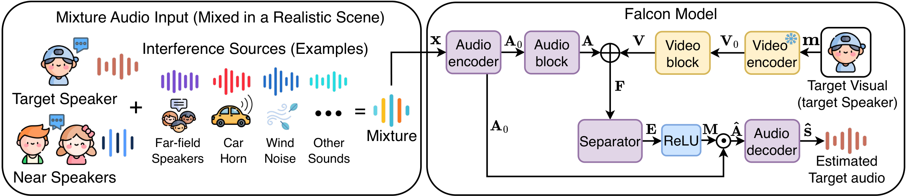
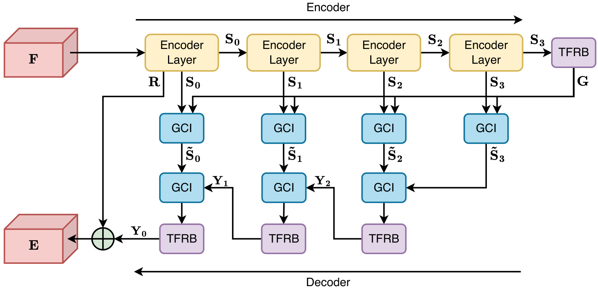
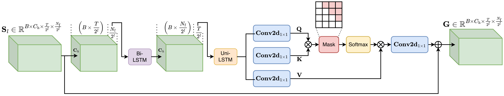

Despite rapid progress in audio-visual target speaker extraction (AVTSE), deploying it as a streaming system remains hard for two reasons: high-performance causal models incur large parameter counts and long inference latency, whereas lightweight alternatives recover capacity by repeatedly applying the same separator and thereby reintroduce computation.
We propose Falcon, an efficient causal AVTSE framework whose AudioBlock performs multi-scale time-frequency separation in a single forward pass and is trained with an encoder-space speaker contrastive loss that suppresses near-field leakage at no inference cost and is architecture-agnostic across AVTSE backbones.
We also release RealSSA, a realistic simulated-scene AVTSE benchmark with 2 to 6 dynamic speakers across four scene types, paired with a real-recorded evaluation set. Falcon achieves state-of-the-art extraction on RealSSA, LRS2-2Mix, and LRS3-2Mix while reducing parameters, computational cost, and GPU inference latency over the AV-TFGridNet baseline by 91.9%, 20.2×, and 11.1×, respectively.
The page is designed to make the workload visible: a new streaming model, a new realistic benchmark, and comprehensive evaluation across simulated and recorded scenes.
Falcon replaces iterative separator cycles with an encoder-decoder AudioBlock that captures multi-scale time-frequency structure in one forward pass.
An encoder-space contrastive loss pulls estimates toward the clean target while pushing them away from near-field interferers, without adding inference cost.
RealSSA covers dynamic speaker counts, near-/far-field interference, reverberation, environmental noise, sudden noise, and real-recorded evaluation.
RealSSA is built around dynamic speaker counts, explicit distance control, and systematic acoustic variation across realistic scenes.
Four scene types simulate real deployment settings: small meeting rooms, medium indoor spaces, large public spaces, and outdoor environments.
RealSSA jointly varies near-field speakers, far-field speech, RT60, environmental noise SIR, and sudden noise events.
| Scene | Space Size | RT60 | Near Speakers | Far Speakers | Env. Noise SIR | Sudden Noise |
|---|---|---|---|---|---|---|
| Small meeting | 4–6 × 3–5 × 2.5–3 m | 0.3–0.6 s | 1–5, 0.5–1.5 m | none | 5–15 dB | 30%, 1 event |
| Medium indoor | 8–15 × 8–12 × 3–4 m | 0.5–0.9 s | 1–3, 1.0–2.5 m | 10–15, 3–15 m | 5–10 dB | 40%, 1–2 events |
| Large public | 20–40 × 15–30 × 4–8 m | 1.0–2.0 s | 1–4, 1.0–3.0 m | 10–15, 5–20 m | 2–8 dB | 50%, 1–3 events |
| Outdoor | 50 × 50 × 20 m | 0.05–0.1 s | 1–4, 1.0–4.0 m | 10–15, 5–25 m | -2–5 dB | 40%, 1–3 events |
Falcon receives mixture audio and target-speaker mouth video, extracts audio-visual representations, and outputs the target speech stream under causal constraints.
Falcon adopts a standard target-speaker extraction framework: audio and visual encoders extract modality-specific features, a fusion module combines them, and a single-pass separator with mask generator recovers the target speech. Unlike iterative separators that recycle one compact block across multiple cycles, Falcon accumulates multi-scale time-frequency capacity within a single forward pass.

The separator follows an encoder-decoder design. The encoder progressively downsamples the fused feature across 3 stages to extract multi-scale representations and computes a global context at the bottleneck. This context is injected into skip features at each scale via gated modulation. The decoder restores resolution from coarse to fine, applying time-frequency modeling at every level.

Each TFRB applies three stages of modeling in sequence: (1) a bidirectional LSTM along the frequency axis for spectral pattern capture, (2) a unidirectional LSTM along the time axis to maintain causal streaming, and (3) masked 2D self-attention over the joint time-frequency plane. This design enables fine-grained spectro-temporal refinement at each decoder level while preserving the causal constraint.

Select a scene and switch among different systems. The video timeline controls the selected separated audio, enabling synchronized audio-visual comparison.
Play or seek the video. The selected separated audio will follow the same timestamp.
The visible video is fixed, while the synchronized separated audio can be switched among systems.
This sample highlights robustness under high reverberation and sudden interference events.
This sample demonstrates streaming AVTSE under outdoor noise with moving interference.
Main separation quality and efficiency comparisons. Bold indicates the best result; underlined values indicate the second-best result.
| Method | RealSSA-Real | RealSSA-Sim | LRS2-2Mix | LRS3-2Mix | VoxCeleb2-2Mix | ||||
|---|---|---|---|---|---|---|---|---|---|
| DNSMOS ↑ | SI-SNRi ↑ | SDRi ↑ | SI-SNRi ↑ | SDRi ↑ | SI-SNRi ↑ | SDRi ↑ | SI-SNRi ↑ | SDRi ↑ | |
| AV-ConvTasNet | 2.580 | 1.2 | 2.6 | 9.8 | 10.3 | 12.5 | 12.8 | 6.9 | 8.2 |
| AV-Sepformer | 2.813 | 5.5 | 6.3 | 10.6 | 11.1 | 13.4 | 13.7 | 6.9 | 8.3 |
| AV-TF-GridNet | 3.030 | 7.6 | 8.1 | 12.7 | 13.1 | 14.3 | 14.8 | 5.8 | 7.7 |
| RTFSNet-12 | 3.066 | 4.9 | 5.7 | 12.4 | 12.8 | 14.0 | 14.4 | 8.4 | 10.7 |
| CTCNet | 2.840 | 5.4 | 6.2 | 8.0 | 8.8 | 9.4 | 10.2 | 2.5 | 4.7 |
| AV-DPRNN | 2.901 | 5.4 | 6.2 | 10.2 | 10.7 | 11.9 | 12.3 | 7.8 | 9.0 |
| AV-Mossformer2 | 2.912 | 6.0 | 6.7 | 13.2 | 13.9 | 16.2 | 16.6 | 7.7 | 9.1 |
| Swift-Net-12 | 3.276 | 7.3 | 7.8 | 13.9 | 14.1 | 16.0 | 16.3 | 9.4 | 10.8 |
| Dolphin | 2.960 | 6.7 | 7.3 | 14.0 | 14.6 | 14.3 | 14.9 | 9.2 | 11.1 |
| Falcon (Ours) | 3.276 | 7.7 | 8.2 | 14.1 | 14.7 | 16.4 | 16.7 | 10.5 | 11.8 |
| Method | Params (M) ↓ | MACs (G) ↓ | CPU Latency (ms) ↓ | GPU Latency (ms) ↓ | RAM (MB) ↓ | GPU Inf. (MB) ↓ |
|---|---|---|---|---|---|---|
| AV-TF-GridNet | 6.2 | 213.8 | 5646.3 | 567.8 | 136.3 | 1015.8 |
| AV-Mossformer2 | 56.7 | 224.2 | 16670.7 | 114.9 | 330.9 | 539.8 |
| Swift-Net-12 | 0.5 | 45.3 | 4163.8 | 172.1 | 482.3 | 411.7 |
| Dolphin | 5.6 | 18.1 | 2411.0 | 87.9 | 560.2 | 390.3 |
| Falcon (Ours) | 0.5 | 10.6 | 1361.2 | 51.3 | 125.3 | 364.7 |
| Method | Trained on VoxCeleb2 | Trained on RealSSA (Ours) | ||
|---|---|---|---|---|
| NISQA ↑ | DNSMOS ↑ | NISQA ↑ | DNSMOS ↑ | |
| AV-TF-GridNet | 2.495 | 2.757 | 2.413 | 3.030 |
| AV-Mossformer2 | 1.995 | 2.715 | 2.256 | 2.912 |
| Swift-Net-12 | 2.481 | 3.064 | 3.484 | 3.276 |
| Dolphin | 1.593 | 2.608 | 2.590 | 2.960 |
| Falcon (Ours) | 2.431 | 2.878 | 3.615 | 3.276 |
Ablations verify the role of downsampling depth, recurrent unit design, encoder-space speaker contrastive loss, and negative-weighting schedule.
| Downsampling Stages | SI-SNRi ↑ | SDRi ↑ |
|---|---|---|
| 1 | 7.1 | 7.7 |
| 2 | 7.4 | 7.9 |
| 3 (Ours) | 7.7 | 8.2 |
| Recurrent Unit | SI-SNRi ↑ | SDRi ↑ | Params (M) ↓ | MACs (G) ↓ |
|---|---|---|---|---|
| RNN | 6.2 | 7.1 | 0.08 | 1.90 |
| SRU | 7.4 | 7.9 | 0.15 | 2.71 |
| GRU | 7.3 | 7.9 | 0.20 | 4.42 |
| LSTM (Ours) | 7.7 | 8.2 | 0.25 | 5.69 |
| Model | Loss | SI-SNRi ↑ | SDRi ↑ |
|---|---|---|---|
| Falcon | Without | 7.3 | 7.8 |
| Falcon | + Ours | 7.7 | 8.2 |
| SwiftNet-12 | Baseline | 7.3 | 7.8 |
| SwiftNet-12 | + Ours | 7.5 | 8.0 |
| Dolphin | Baseline | 6.7 | 7.3 |
| Dolphin | + Ours | 7.0 | 7.6 |
| τ Strategy | SI-SNRi ↑ | SDRi ↑ |
|---|---|---|
| Fixed τ = 0 | 7.5 | 8.1 |
| Fixed τ = 1 | 7.4 | 7.9 |
| Annealing τ: 0 → 2 | 7.5 | 8.0 |
| Annealing τ: 0 → 1 (Ours) | 7.7 | 8.2 |
@inproceedings{sang2026falcon,
title = {Efficient Streaming Audio-Visual Target Speaker Extraction for Real-World Acoustic Scenes},
author = {Sang, Wendi and Li, Kai and Li, Yifan and Huang, Jianqiang and Hu, Xiaolin},
booktitle = {Advances in Neural Information Processing Systems (NeurIPS)},
year = {2026}
}